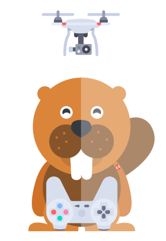

Net yet available! - Pas encore disponible
Net yet available!
You're an eager beaver, aren't you? While beavers can't fly drones and don't need to register, take exams, or get a pilot certificate, you'll be able to do so very soon.
Please visit the Transport Canada Drone Safety web site for more information.

Pas encore disponible
Vous êtes un castor avide, n'êtes vous pas? Tandis que les castors ne peuvent pas enregistrer, passer un exam, ou obtenir un certificat de pilote, vous pourrez le faire très bientôt.
Visitez le site web pour la sécurité des drones Transports Canada pour plus d'informations.